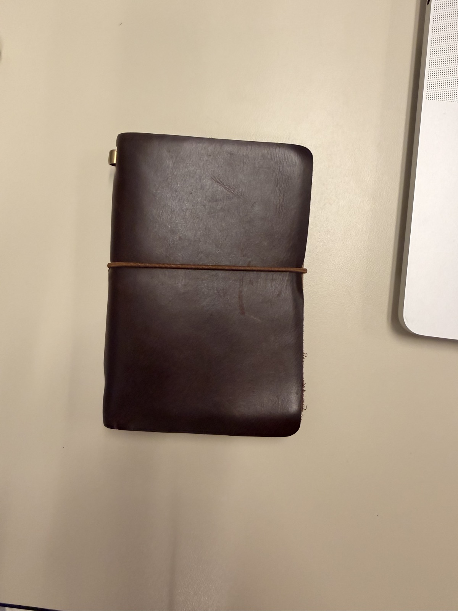
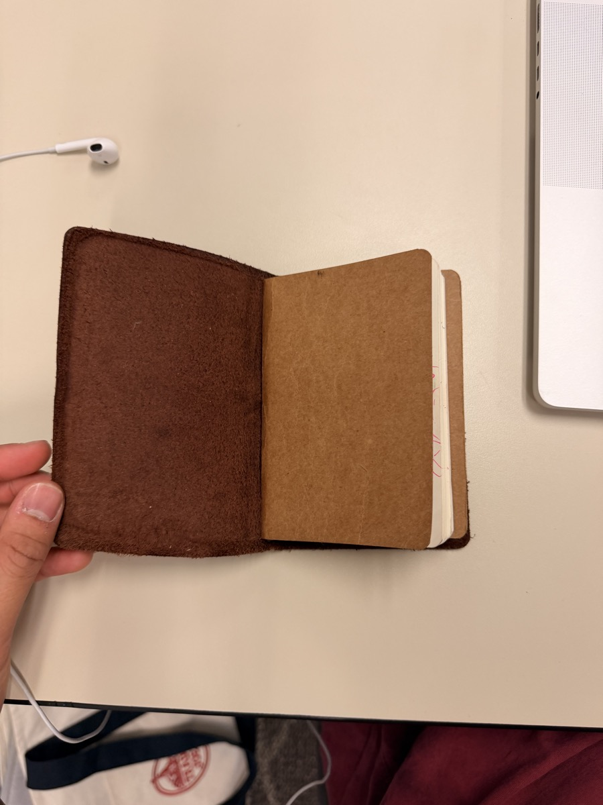
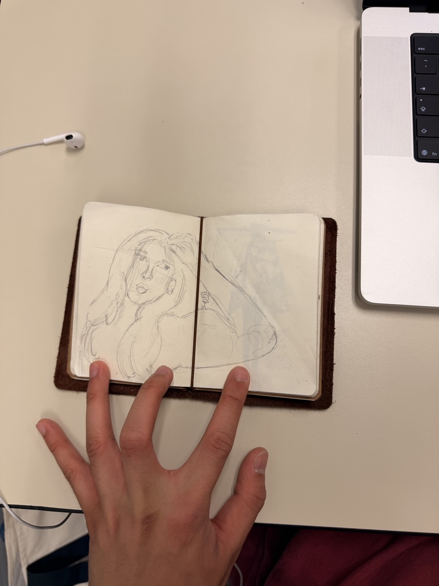
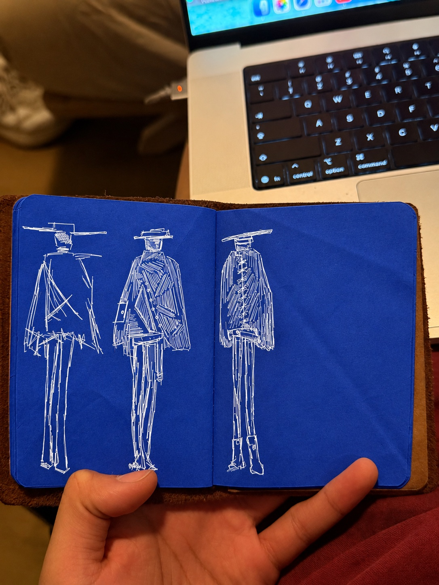
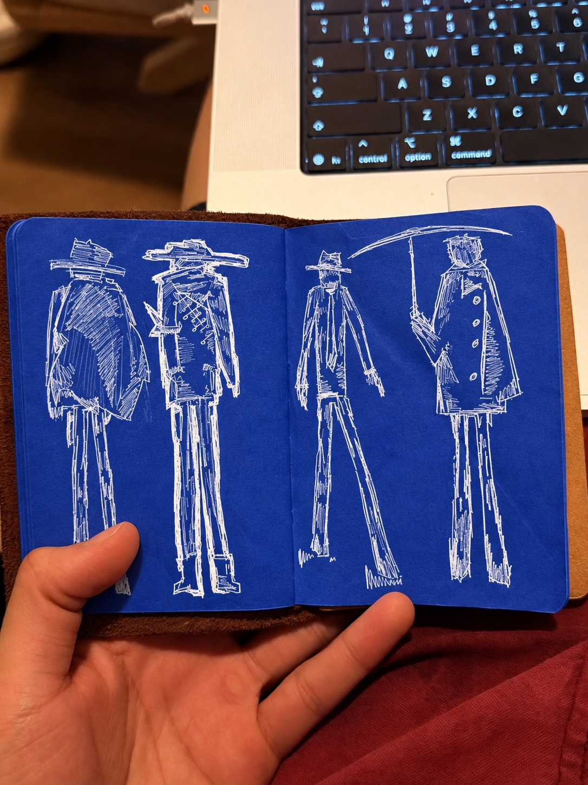
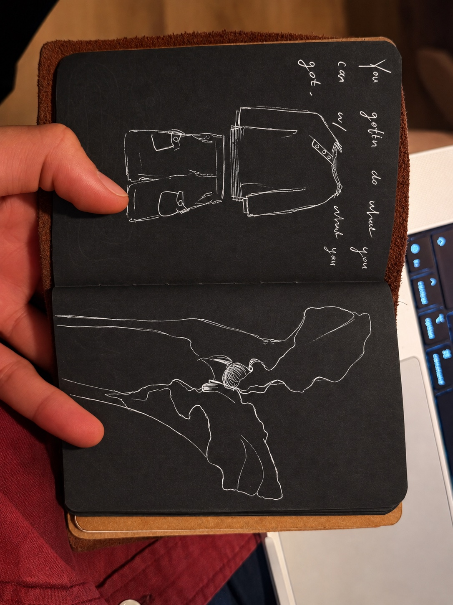

It starts with
carrying it.
The everyday journal behind the idea: a simple cover, an elastic closure, and room for whatever needs a page. Three Stacked Goats takes that ritual and makes the inside yours.








photos from my first sample, and my personal book.